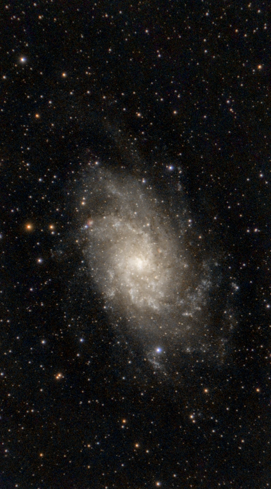

Milestone #1M33: Triangulum Galaxy
Due Oct 5
Summary
My first astrophotography image: the Triangulum Galaxy (M33), a spiral galaxy about 2.7 million light-years away in the constellation Triangulum.
The goal of this assignment was to capture, process and present a deep-sky object from start to finish.
Reflection
This project taught me the full astrophotography workflow, from choosing a target to stacking and stretching the data. M33 is faint and spread out, so getting the detail to show without amplifying noise was the biggest challenge. Next time I would collect more total exposure time and be more careful with background gradients.
Design process / progress
Add your process notes here, such as target choice, capture settings, stacking and editing steps, plus screenshots or the weekly logs for Weeks 1–4.
Final high-res export

Milestone #2Planning an astrophotography night: M31
Due Oct 30
Summary
A complete plan for imaging M31, the Andromeda Galaxy, on the night of November 7 into 8 with a Seestar S30: the target, timing, location, Moon conditions and workflow, plus a short essay on how satellite constellations affect astrophotography.
Reflection
Planning this session taught me how much of astrophotography happens before the telescope is switched on: checking altitude, Moon phase, sky darkness and backup nights. The trickiest part was working around M31 being larger than the Seestar S30’s field of view and passing nearly overhead, where tracking is weakest. After the session I will add what worked and what I would change.
Design process / progress
Target
My target is M31 (the Andromeda Galaxy), the nearest large spiral galaxy to the Milky Way and one of the very best deep-sky objects to photograph in the autumn.
| Detail | Value |
|---|---|
| Object | M31, Andromeda Galaxy (with companions M32 and M110 in the same frame) |
| Constellation | Andromeda |
| Coordinates (J2000) | RA 00h 42m 44s, Dec +41° 16′ |
| Distance | About 2.5 million light-years |
| Brightness | Magnitude 3.4, visible to the naked eye under dark skies |
| Apparent size | About 3° × 1°, roughly six full Moons wide |
I went with M31 as it's bright, large and passes almost directly overhead from southern Ontario in November. It's larger than the Seestar S30's 2.13° × 1.20° field of view, so I'll be using mosaic mode to get the whole thing in. The primary issues are the bright core, which overexposes very quickly, and the very faint outer dust lanes, which require a very long total exposure time.
Date and time
The session is the night of Nov 7 into Nov 8 with imaging from 6:45 pm to 3:30 am EST. That's approximately 8.75 hours of usable time with M31 above 30° and the sky fully dark.
| Time (EST) | Event |
|---|---|
| 6:00 PM | Set up the Seestar in the yard and let it cool |
| 6:40 PM | Astronomical twilight ends, full darkness begins |
| 6:45 PM | Start capturing (M31 already about 55° high in the east) |
| 9:50 PM | M31 crosses the meridian at about 86°, almost straight overhead; alt-az tracking is weakest here, so expect more rejected frames |
| 3:30 AM | M31 drops below 30° in the northwest; stop lights, shoot darks |
| 5:26 AM | Astronomical twilight begins |
Daylight saving time ends on the 1st of November, so all times are Eastern Standard Time (UTC−5). The backup nights are the 6th, 8th, 9th and 10th if the forecast is overcast, as all of those dates are within two days of the new moon.
Location
The session will be at my place, under roughly Bortle 4 skies.
- Sky quality: Roughly Bortle 4 (rural/suburban transition). The Milky Way is visible overhead but quite washed out near the horizon, with some glow from the surrounding towns.
- Why here? No drive so I can get set up early, warm up in the building between checks and run power from the house rather than just on batteries.
- Horizon: M31 passes almost straight overhead, so trees and houses only really come into play after about 3 am when it's well down in the NW.
- Ground: On grass or solid ground (not on a deck that shakes when someone walks on it) and well away from heated walls.
Bortle 4 skies will wash out the very faint outer arms of M31 a bit, so I'll be aiming for at least 4 hours of total exposure, turning off the outdoor lights and removing the sky gradient in processing. The Seestar dual-band filter is staying off because it only passes light from glowing gas in nebulae and would block out most of the galaxy's light.
Moon conditions
The Moon makes no difference at all. It's a waning crescent (around 1% illuminated) and doesn't rise until 6:34 am anyway, so it won't be in the sky during the session.
- New moon: November 9, 2026 at 2:02 am EST (Forecastbar), so the session is about 30 hours before new moon.
- Illumination on the night: 1.4%.
- Moonrise: 6:34 am on November 8 (astronomical twilight begins at 5:26 am).
- Effect: No moonlight throughout the imaging window, the ideal scenario for faint detail such as the outer arms of M31 and the dust lanes.
- On the backup nights the Moon isn't an issue until November 13, when a 20% crescent will be up until around 8 pm.
Planned workflow
The Seestar handles all the focus, tracking, framing and stacking itself, so the plan is to set it up properly, run it in mosaic mode taking 10-second frames for around 8.75 hours, and then process the results the following day.
- Before the night: Fully charge the Seestar and power bank, update the app and firmware, check the weather and turn off the outdoor lights.
- Setup (6:00 pm): Seestar on level ground with a clear view overhead and to the NW. Switch on the Seestar, connect the app, level it using the app's level guide and turn on the anti-dew heater. Leave it for about 20 minutes to cool to the outside temperature.
- Target and framing (6:30–6:45 pm): Select M31 in the app. The Seestar slews, plate solves and auto-focuses itself. Turn on mosaic mode and rotate the framing so the galaxy is along the long side of the frame.
- Capture settings: UV/IR cut filter (dual band off), 10-second exposures and "save each frame" turned on so the raw frames can be re-stacked later.
- Main capture (6:45 pm to 3:30 am): Let the live stack build. Check the app hourly for dew, clouds and battery level. Between roughly 9:15 and 10:30 pm, M31 is almost straight overhead, where alt-az tracking is at its weakest, so more frames will be rejected. That's perfectly normal. Re-run autofocus once or twice during the night, since focus tends to drift as temperatures drop.
- End of session (3:30 am): Stop the stack and save as FITS and JPEG. Darks are taken via the dark-field filter, so no separate dark flats or bias frames are required.
- Processing (next day): Copy the files onto the laptop. In Siril, crop the ragged mosaic edges, remove the Bortle 4 light pollution gradient, colour-calibrate, stretch and noise-reduce, and finish in GIMP. If satellite trails have survived the in-app stack, re-stack the saved frames in Siril with sigma clipping rejection.
- Review: What worked and what to change for the next session.
Final export: written piece
Satellite launches and their effect on astrophotography
Over the last few years, we've seen companies like SpaceX and Amazon launch thousands of satellites into low Earth orbit in hopes of providing internet access to people all over the world. The result of this has been a significant impact on the night sky. The satellite trails have obviously affected astrophotography: they are visible in photographs, they interfere with scientists' ability to study the sky, and they are going to get worse over time.
The most obvious effect of the satellites is the streaks that appear in photographs taken over time. As of August 2026, Starlink alone has 11,102 satellites in space (Space.com). These satellites appear as streaks in photographs taken in the first few hours after sunset because of their low orbits. Around 4.3% of the Hubble Space Telescope images taken between 2018 and 2021 contain satellite trails (Spaceflight Now).
Satellites are also beginning to interfere with astronomical science. There is concern about the impact of satellites such as Starlink on survey telescopes, including the Vera Rubin Observatory, and on radio astronomy in general, as their internet signals could interfere with protected radio frequencies (Space.com). So while the satellites were created to benefit people on the ground, they are also beginning to interfere with our ability to learn about the universe.
The concern is that this is just the beginning. SpaceX plans to launch over 30,000 Starlink satellites, and Amazon's Leo constellation will have 3,236 (Spaceflight Now; Light Reading). A 2025 NASA study found that if all these satellites were built, 96% of images taken by future space telescopes would contain satellite trails (Spaceflight Now). The changes to the night sky that we will see in the coming years will be dramatic.
As an astrophotographer, I have found a way around the problem with my Seestar S30, which can take thousands of 10-second exposures of the same object and then stack them to remove satellite trails. The night sky is a shared resource, and if we don't start controlling the number of satellites launched, the dark skies that astrophotographers rely on could be lost for everyone.
Works cited
- “Amazon Leo: Looking Ahead.” Light Reading, 29 Dec. 2025, lightreading.com/satellite/looking-ahead-here-comes-amazon-leo-
- “New Moon, November 2026.” Forecastbar, forecastbar.com/astronomy/event/jpl:moon:new:2026:11
- “Starlink Satellites: Facts, Tracking and Impact on Astronomy.” Space.com, updated 2026, space.com/spacex-starlink-satellites.htm
- “Study: Current, Future Megaconstellations Risk Space-Based Astronomy.” Spaceflight Now, 12 Dec. 2025, spaceflightnow.com
- “ZWO Seestar S30 Smart Telescope Review.” Sky at Night Magazine, skyatnightmagazine.com/reviews/zwo-seestar-s30